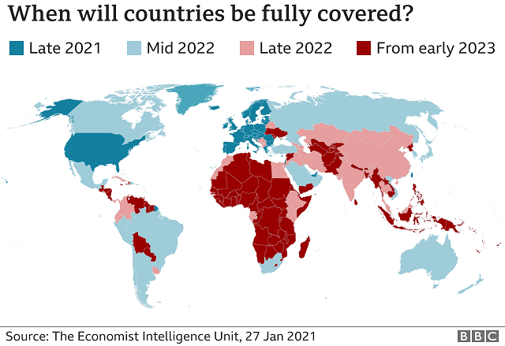

“A good traveler has no fixed plans, and is not intent on arriving.”
— Lao Tzu
Travel News
Countries predicted to be full vaccinnated by late 2021:
According to 'The Economist - Intelligence Unit,' The USA, along with most of Europe, Scandanavia, Isreal, Lebanon and the UAE should be vaccinated by late 2021.
Predicted to be so by mid-2022:
Canada, Mexico, Brazil, Argentina, Peru, Chile, Uraguay, South Africa, Australia, New Zealand, Taiwan, Japan, S. Korea, Vietnam, Russia, Turkey, Saudia Arabia, Oman
End of 2022 or Later:
Most of Central America, The Carribean, Africa, Central Asia, SE Asia, Colombia, Paraguay, Venezuela, Guyana, French Guiana, Suriname, Bolivia, Equador, Ukraine, Moldova, etc.